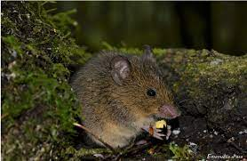

Primeiro vamos ler os dados que utilizaremos para as análises. São dados de ocorrência de espécies de pequenos roedores do gênero Akodon.
Antes de começar com os códigos, vamos apreciar a fofura dos Akodon…

library(Herodotools)
library(dplyr)
library(rnaturalearth)
data("akodon_sites")
data("akodon_newick")Vamos fazer alguns processamentos básicos destes dados, apenas para separar as coordenadas geográficas dos dados de ocorrência. Em seguida plotaremos os padrões de riqueza destes dados, apenas para explorar visualmente os dados que estamos trabalhando
site_xy <- akodon_sites %>%
dplyr::select(LONG, LAT)
akodon_pa <- akodon_sites %>%
dplyr::select(-LONG, -LAT)
# checando nomes das espécies na matriz de ocorrência e árvore
spp_in_tree <- names(akodon_pa) %in% akodon_newick$tip.label
akodon_pa_tree <- akodon_pa[, spp_in_tree]
# plotando os padrões espaciais
library(ggplot2)
coastline <- rnaturalearth::ne_coastline(returnclass = "sf")
map_limits <- list(
x = c(-95, -30),
y = c(-55, 12)
)
richness <- rowSums(akodon_pa_tree)
map_richness <-
dplyr::bind_cols(site_xy, richness = richness) %>%
ggplot2::ggplot() +
ggplot2::geom_raster(ggplot2::aes(x = LONG, y = LAT, fill = richness)) +
rcartocolor::scale_fill_carto_c(name = "Richness", type = "quantitative", palette = "SunsetDark") +
ggplot2::geom_sf(data = coastline) +
ggplot2::coord_sf(xlim = map_limits$x, ylim = map_limits$y) +
ggplot2::ggtitle("") +
ggplot2::xlab("Longitude") +
ggplot2::ylab("Latitude") +
ggplot2::labs(fill = "Richness") +
ggplot2::theme_bw() +
ggplot2::theme(
plot.margin = unit(c(0.1, 0.1, 0.1, 0.1), "mm"),
legend.text = element_text(size = 12),
axis.text = element_text(size = 7),
axis.title.x = element_text(size = 11),
axis.title.y = element_text(size = 11)
)
map_richnessAqui começamos a utilização das funções do pacote, a primeira a ser
utilizada será a função calc_evoregions para obtenção de
evoregiões. Para mais informações sobre evoregiões confira o paper que
propõe o método proposta
original do método
IMPORTANTE Visto que os nomes das evoregiões são atribuídos de maneira aleatória (números de 1 à 5 neste exemplo), a cada vez que rodamos esta função as regiões terão nomes distintos. Para evitar problemas de reprodutibilidade e garantir que todos tenham os mesmos resultados, recomendo que utilizem o resultado pronto desta análise. Caso queiram rodar novamente, os resultados das funções subsequentes irão mudar, pois precisamos rodar novamente um modelo evolutivo para os novos nomes. Isso não quer dizer que os resultados são dependentes de cada rodada, apenas que não temos como controlar os nomes que são atribuídos a cada região, o padrão sempre vai se manter.
load(here::here("data", "regions_results.RData"))
site_region <- regions$Cluster_EvoregionsSe preferir rodar novamente utilize o código seguinte. Mas lembre-se, caso faça isso será necessário rodar um modelo de reconstrução novamente para obter os mesmos resultados. Recomendo fazer isso caso esteja trabalhando com os seus próprios dados, porém isso pode levar algum tempo de processamento.
regions <-
Herodotools::calc_evoregions(
comm = akodon_pa_tree,
phy = akodon_newick
)
site_region <- regions$cluster_evoregionsPodemos explorar um pouco o objeto que retorna da função
calc_evoregions. Além disso podemos vizualizar
espacialmente a distribuição destas evoregiões para este conjunto de
dados
evoregion_df <- data.frame(
site_xy,
site_region
)
r_evoregion <- terra::rast(evoregion_df)
# Converting evoregion to a spatial polygon data frame, so it can be plotted
sf_evoregion <- terra::as.polygons(r_evoregion) %>%
sf::st_as_sf()
# Downloading coastline continents and croping to keep only South America
coastline <- rnaturalearth::ne_coastline(returnclass = "sf")
map_limits <- list(
x = c(-95, -30),
y = c(-55, 12)
)
# Assigning the same projection to both spatial objects
sf::st_crs(sf_evoregion) <- sf::st_crs(coastline)
# Colours to plot evoregions
col_five_hues <- c(
"#3d291a",
"#a9344f",
"#578a5b",
"#83a6c4",
"#fcc573"
)
map_evoregion <-
evoregion_df %>%
ggplot2::ggplot() +
ggplot2::geom_raster(ggplot2::aes(x = LONG, y = LAT, fill = site_region)) +
ggplot2::scale_fill_manual(
name = "",
labels = LETTERS[1:5],
values = rev(col_five_hues)
) +
ggplot2::geom_sf(data = coastline) +
ggplot2::geom_sf(
data = sf_evoregion,
color = "#040400",
fill = NA,
size = 0.2) +
ggplot2::coord_sf(xlim = map_limits$x, ylim = map_limits$y) +
ggplot2::ggtitle("") +
ggplot2::theme_bw() +
ggplot2::xlab("Longitude") +
ggplot2::ylab("Latitude") +
ggplot2::theme(
legend.position = "bottom",
plot.margin = unit(c(0.1, 0.1, 0.1, 0.1), "mm"),
legend.text = element_text(size = 12),
axis.text = element_text(size = 7),
axis.title.x = element_text(size = 11),
axis.title.y = element_text(size = 11)
)
map_evoregionLembre-se, caso tenha rodado novamente a função para calculo das evoregiões, os nomes serão distintos do que estão vendo nesta figura.
Podemos utilizar o resultado anterior para calcular os graus de afiliação de cada célula para a região na qual foi classificada. Os graus de afiliação nada mais são que o grau de proximidade da célula para o centróide da região na qual foi alocada. Este calculo pode ser realizado com qualquer análise de regionalização/classificação. Aqui faremos com os resultados que vieram das evoregiões
# Selecting only axis with more than 5% of explained variance from evoregion output
axis_sel <- which(regions$PCPS$prop_explainded >= regions$PCPS$tresh_dist)
PCPS_thresh <- regions$PCPS$vectors[, axis_sel]
# distance matrix using 4 significant PCPS axis accordingly to the 5% threshold
dist_phylo_PCPS <- vegan::vegdist(PCPS_thresh, method = "euclidean")
# calculating affiliation values for each assemblage
afi <-
Herodotools::calc_affiliation_evoreg(phylo.comp.dist = dist_phylo_PCPS,
groups = site_region)
# binding the information in a data frame
sites <- dplyr::bind_cols(site_xy, site_region = site_region, afi)Podemos plotar esses valores de filiação espacialmente. Esses valores podem também ser utilizados para outros fins.
map_joint_evoregion_afilliation <-
evoregion_df %>%
ggplot() +
ggplot2::geom_raster(ggplot2::aes(x = LONG, y = LAT, fill = site_region),
alpha = sites[, "afilliation"]) +
ggplot2::scale_fill_manual(
name = "",
labels = LETTERS[1:5],
values = rev(col_five_hues)
) +
ggplot2::geom_sf(data = coastline, size = 0.4) +
ggplot2::geom_sf(
data = sf_evoregion,
color = rev(col_five_hues),
fill = NA,
size = 0.7) +
ggplot2::coord_sf(xlim = map_limits$x, ylim = map_limits$y) +
ggplot2::ggtitle("") +
guides(guide_legend(direction = "vertical")) +
ggplot2::theme_bw() +
ggplot2::xlab("Longitude") +
ggplot2::ylab("Latitude") +
ggplot2::theme(
legend.position = "bottom",
plot.margin = unit(c(0.1, 0.1, 0.1, 0.1), "mm"),
legend.text = element_text(size = 10),
axis.text = element_text(size = 8),
axis.title.x = element_text(size = 10),
axis.title.y = element_text(size = 10)
)